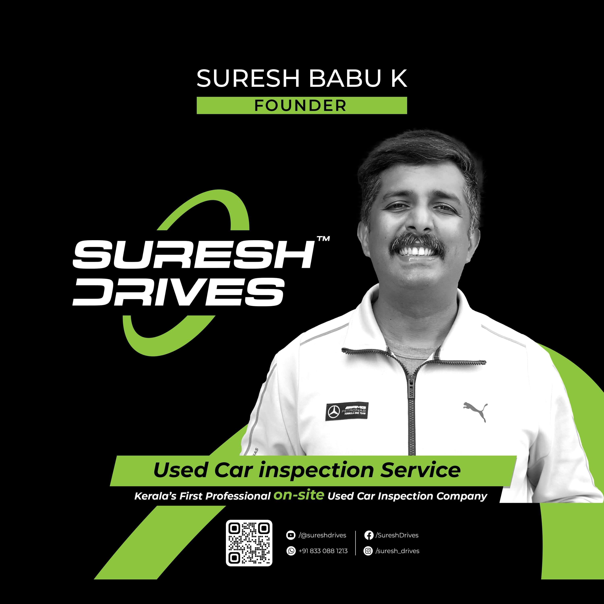

Talk to the people
who check the cars.
One team in Kozhikode, Kerala — inspecting for buyers and sellers across India. Call, WhatsApp or drop by.

Suresh Drives · KozhikodeIndia's first professional on-site car inspection company.
Suresh Drives, founded by Suresh Babu K, introduced advanced tools and AI-powered report calculations to the used-car trade. Based in Kozhikode, Kerala and backed by over 10 years of experience in the automobile industry, the team specialises in used-car inspections for both buyers and sellers — detecting hidden issues such as structural damage or flood-affected vehicles before they become costly mistakes.
SD Certified is that same company's marketplace: every car listed has been through the 300+ point process, scored by AI and graded Platinum, Gold or Silver.
What clients say about Suresh Drives.
"I must say, Suresh Drives is a one-of-a-kind used car consultant, not only in Kerala but in the entire country. He takes used car consulting very seriously and has a handpicked team that shares his skills and values."
— Ashar A. Latheef · Kozhikode"Suresh Drives helped me inspect my BMW 530d… The money you spend for inspection will be worth it and the car you buy will give you immense peace of mind if it is a Suresh Drives certified car."
— Kiran Bose · BMW 530d"It was a great experience with the team who supported me to select a perfect car. I strongly believe a team like Suresh Drives can help people who live abroad make their right choices."
— Jayaram R Nair · Dubai